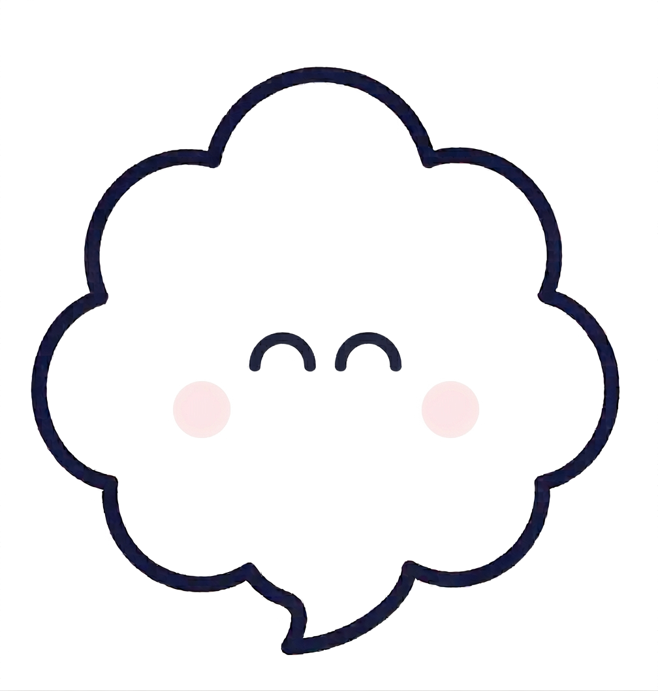

<!DOCTYPE html>
<html lang="ja">
<head>
<!-- Google tag (gtag.js) -->
<script async src="https://www.googletagmanager.com/gtag/js?id=G-ZREF1ZJJTQ"></script>
<script>
  window.dataLayer = window.dataLayer || [];
  function gtag(){dataLayer.push(arguments);}
  gtag('js', new Date());

  gtag('config', 'G-ZREF1ZJJTQ');
</script>
<meta charset="UTF-8" />
<meta name="viewport" content="width=device-width, initial-scale=1" />
<title>モヤンちゃん｜モヤモヤ整理ワーク</title>
<meta name="description" content="急な発熱や予定変更で自分を後回しにしてきた人へ。モヤモヤの正体を一緒に整理する3分ワークです。" />
<meta name="robots" content="index,follow" />
<meta property="og:type" content="website" />
<meta property="og:site_name" content="モヤンちゃん｜モヤモヤ整理ワーク" />
<meta property="og:title" content="モヤンちゃん｜モヤモヤ整理ワーク" />
<meta property="og:description" content="急な発熱や予定変更で自分を後回しにしてきた人へ。モヤモヤの正体を一緒に整理する3分ワーク。" />
<meta property="og:url" content="https://asakojun-cmyk.github.io/moyan-work-mini/" />
<meta property="og:image" content="https://asakojun-cmyk.github.io/moyan-work-mini/og.png" />
<meta property="og:image:width" content="1200" />
<meta property="og:image:height" content="630" />
<meta name="twitter:card" content="summary_large_image" />
<meta name="twitter:title" content="モヤンちゃん｜モヤモヤ整理ワーク" />
<meta name="twitter:description" content="急な発熱や予定変更で自分を後回しにしてきた人へ。モヤモヤの正体を一緒に整理する3分ワーク。" />
<meta name="twitter:image" content="https://asakojun-cmyk.github.io/moyan-work-mini/og.png" />
<style>
:root{
  --cream:#fffdf2; --sky:#e8f5ff; --ink:#000030;
  --blue:#5b6b8c; --white:#fff; --ink-60:rgba(0,0,48,.6); --ink-45:rgba(0,0,48,.4);
  --line:rgba(91,107,140,.16); --button-line:rgba(91,107,140,.36);
  --soft-shadow:0 10px 28px rgba(91,107,140,.1);
  --font-round:"Zen Maru Gothic","Hiragino Maru Gothic ProN","ヒラギノ丸ゴ ProN W4",sans-serif;
  --font-sans:"Hiragino Sans","Hiragino Kaku Gothic ProN","Yu Gothic","Noto Sans JP",sans-serif;
  --ease:cubic-bezier(.22,.61,.36,1); --maxw:430px; --tap:44px;
}
*{box-sizing:border-box}
html,body{margin:0;padding:0}
html{background:#e9edf3}
body{margin:0;color:var(--ink);font-family:var(--font-round);line-height:1.7;background:#e9edf3}
button{font:inherit;cursor:pointer;color:inherit}
.app{position:relative;width:100%;max-width:var(--maxw);margin:0 auto;min-height:100svh;min-height:100dvh;
  background:linear-gradient(180deg,var(--sky) 0%,#eef8ff 30%,var(--cream) 55%);overflow:hidden;display:flex;flex-direction:column}
@media (min-width:640px){.app{margin:18px auto;min-height:min(880px,calc(100dvh - 36px));border-radius:30px;box-shadow:0 0 60px rgba(20,40,70,.12)}}

.hdr{flex:none;display:flex;align-items:center;justify-content:space-between;gap:10px;padding:12px 18px}
.hdr-brand{display:flex;align-items:center;gap:8px;min-width:0}
.hdr-logo{width:28px;height:28px;flex:none;object-fit:contain}
.hdr-title{margin:0;font-size:12.5px;font-weight:700;color:var(--ink-60);white-space:nowrap}
.progress-wrap{display:flex;flex-direction:column;align-items:flex-end;gap:5px}
.progress-text{font-size:11px;font-weight:800;color:var(--ink-45);white-space:nowrap}
.dots{display:flex;gap:6px}
.dots i{display:block;width:7px;height:7px;border-radius:999px;background:var(--line)}
.dots i.on{background:var(--blue);transform:scale(1.25)}
.dots i.done{background:#bcd9c6}

.screen{flex:1 1 auto;min-height:0;display:flex;flex-direction:column;padding:6px 22px 22px;
  overflow-y:auto;-webkit-overflow-scrolling:touch;animation:fadeIn .22s var(--ease)}
.screen.is-leaving{opacity:0;transform:translateY(-6px);transition:opacity .18s var(--ease),transform .18s var(--ease)}
.screen.center{justify-content:center;text-align:center;align-items:center}
@keyframes fadeIn{from{opacity:0;transform:translateY(4px)}to{opacity:1;transform:translateY(0)}}

.top-title{margin:0 0 14px;font-size:25px;font-weight:900;line-height:1.4;letter-spacing:.02em;color:var(--ink)}
.top-headline{margin:0;font-size:14px;font-weight:700;line-height:1.9;letter-spacing:.02em;color:var(--ink-60)}
.caption{margin:0;font-size:12px;color:var(--ink-45);line-height:1.6}
.brandline{margin:6px 0 8px;color:var(--blue);font-weight:800;font-size:16px;letter-spacing:.02em}
.badge-tap{display:inline-block;margin:8px 0 10px;color:var(--blue);font-weight:900;font-size:14.5px;
  line-height:1.75;letter-spacing:.02em}
.badge-tap span{background:linear-gradient(transparent 20%,rgba(255,255,255,.94) 20%);
  padding:0 4px}
.screen.top-screen{position:relative;align-items:center;text-align:center;padding-top:10px}
.top-main{flex:1;min-height:0;width:100%;display:flex;flex-direction:column;align-items:center;justify-content:center}
.top-hero{position:relative;width:100%;height:clamp(118px,25svh,170px);margin:0 0 22px;display:flex;align-items:flex-end;justify-content:center;pointer-events:none;z-index:0}
.top-hero .top-moyan{width:min(42vw,160px);margin:0 auto}
.top-hero.float{animation:topHeroFloat 6s ease-in-out infinite}
@keyframes topHeroFloat{0%,100%{transform:translateY(0)}50%{transform:translateY(-10px)}}
.top-copy{position:relative;z-index:1;width:100%;display:flex;flex-direction:column;align-items:center;justify-content:center}
@media (max-height:620px){
  .top-main{justify-content:flex-start}
  .screen.top-screen{padding-top:8px}
  .top-hero{height:118px;margin-bottom:14px}
  .top-copy .top-title{font-size:22px}
  .top-copy .top-headline{font-size:13px}
}
.intro-screen{padding-top:8px;justify-content:center}
.intro-list{display:flex;flex-direction:column;gap:10px;margin:8px 0 14px}
.intro-item{background:rgba(255,255,255,.82);border-radius:18px;padding:13px 15px;box-shadow:var(--soft-shadow)}
.intro-label{margin:0 0 4px;color:var(--blue);font-size:12px;font-weight:800}
.intro-text{margin:0;color:var(--ink);font-size:14px;font-weight:700;line-height:1.75}
.intro-note{margin:0 0 14px;color:var(--ink-60);font-size:12.5px;line-height:1.75;text-align:center}
.intro-progress{margin:0 0 12px;text-align:center;color:var(--ink-45);font-size:12px;font-weight:700;line-height:1.5}
.intro-actions{margin-top:6px}

.moyan{display:block;object-fit:contain;user-select:none;-webkit-user-drag:none}
.moyan.lg{width:min(42vw,160px)}
.moyan.md{width:84px}
.float{animation:moyanAlive 9s ease-in-out infinite}
@keyframes moyanAlive{0%{transform:translateY(0)}35%{transform:translateY(-4px)}60%,100%{transform:translateY(0)}}

.btn{display:inline-flex;align-items:center;justify-content:center;gap:8px;width:100%;min-height:52px;
  padding:12px 18px;border:none;border-radius:999px;background:var(--white);color:var(--ink);
  font-family:var(--font-round);font-size:15.5px;font-weight:700;letter-spacing:.02em;
  box-shadow:0 8px 24px rgba(91,107,140,.12);
  transition:transform .15s var(--ease),background .15s var(--ease),opacity .15s var(--ease),box-shadow .15s var(--ease)}
.btn:active{transform:scale(.97);background:var(--sky)}
.btn.primary{font-weight:800}
.btn:disabled{background:#ececdf;color:#a9a79a;opacity:1;pointer-events:none;box-shadow:none}
.btn .arrow{transition:transform .15s var(--ease)}
.btn:not(:disabled) .arrow{transform:translateX(0)}
.hint-select{text-align:center;font-size:12.5px;color:var(--blue);font-weight:700;margin:0 0 6px;
  transition:opacity .2s var(--ease)}
.btn.ghost{border:none;background:transparent;box-shadow:none;color:var(--ink-45);min-height:auto;font-size:13px;width:auto;padding:8px}
.btn.link{text-decoration:none}
.btn.secondary{background:#f5fbff}
.stack{display:flex;flex-direction:column;gap:12px;width:100%;max-width:280px;margin:0 auto}

/* --- 質問画面 --- */
.qtop{display:flex;flex-direction:column;align-items:center;margin-bottom:2px}
.replybox{align-self:stretch;box-shadow:var(--soft-shadow);border-radius:20px;
  background:var(--white);padding:16px 18px;color:var(--ink);position:relative;margin:10px 0 14px;
  transition:opacity .15s ease,background .2s ease,box-shadow .2s ease,transform .2s ease}
.replybox::before{content:"";position:absolute;top:-8px;left:50%;width:18px;height:18px;
  background:inherit;border-radius:4px;transform:translateX(-50%) rotate(45deg);
  box-shadow:-4px -4px 12px rgba(91,107,140,.04);z-index:0}
.replybox .who,.replybox .reply-text{position:relative;z-index:1}
.replybox.ack-active{animation:ackBubble 1.2s var(--ease)}
@keyframes ackBubble{0%{background:var(--white);box-shadow:var(--soft-shadow)}
  35%{background:var(--white);box-shadow:0 8px 22px rgba(91,107,140,.16)}
  100%{background:var(--white);box-shadow:var(--soft-shadow)}}
.replybox .who{color:var(--blue);font-weight:800;display:block;margin-bottom:4px;font-size:12.5px}
.reply-text{display:block;white-space:pre-line;font-size:15px;line-height:1.85}
.choice-rule{align-self:center;margin:0 0 10px;padding:5px 12px;border-radius:999px;background:rgba(255,255,255,.82);
  color:var(--blue);font-size:12.5px;font-weight:800;line-height:1.5;box-shadow:0 4px 14px rgba(91,107,140,.07)}

@keyframes moyanNod{0%{transform:translateY(0) rotate(0)}22%{transform:translateY(7px) rotate(-7deg)}
  45%{transform:translateY(-1px) rotate(2deg)}68%{transform:translateY(5px) rotate(-4deg)}
  86%{transform:translateY(0) rotate(1deg)}100%{transform:translateY(0) rotate(0)}}
.moyan.nodding{animation:moyanNod 1.3s ease-in-out}
@keyframes moyanWiggle{0%,100%{transform:rotate(0)}30%{transform:rotate(-4deg)}70%{transform:rotate(4deg)}}
.moyan.wiggling{animation:moyanWiggle 1s ease-in-out}

.chipgrid{display:flex;flex-wrap:wrap;gap:8px;margin-bottom:6px}
.chip{border:none;border-radius:999px;background:var(--white);color:var(--ink);
  font-family:var(--font-round);font-size:13.5px;font-weight:700;padding:9px 14px;line-height:1.3;
  box-shadow:0 6px 18px rgba(91,107,140,.09);
  transition:transform .12s var(--ease),background .12s var(--ease),color .12s var(--ease),box-shadow .12s var(--ease)}
.chip:active{transform:scale(.96)}
.chip.on{background:var(--blue);color:#fff}
.chip.other{color:var(--ink-60)}

.optionlist{display:flex;flex-direction:column;gap:8px;margin-bottom:6px}
.optrow{display:flex;align-items:center;gap:12px;width:100%;min-height:52px;padding:9px 14px;
  border:none;border-radius:14px;background:var(--white);color:var(--ink);
  font-family:var(--font-round);font-size:14.5px;font-weight:700;text-align:left;
  box-shadow:0 7px 20px rgba(91,107,140,.1);
  transition:transform .12s var(--ease),background .12s var(--ease),color .12s var(--ease),box-shadow .12s var(--ease)}
.optrow:active{transform:scale(.98)}
.optrow .ot{flex:1;line-height:1.4}
.optrow .ot strong{font-weight:900;color:var(--ink)}
.optrow .ot .ot-sub{font-weight:700;color:var(--ink-60)}
.optrow .ock{flex:none;width:18px;height:18px;border-radius:999px;border:1px solid var(--button-line);position:relative}
.optrow.on{background:#f2f8ff;color:var(--ink);box-shadow:0 10px 24px rgba(91,107,140,.16)}
.optrow.on .ock{background:var(--blue);border-color:var(--blue)}
.optrow.on .ock::after{content:"";position:absolute;inset:5px;border-radius:999px;background:#fff}
.optrow.other{color:var(--ink-60)}

.freewrap{margin-top:8px;max-height:0;overflow:hidden;transition:max-height .25s var(--ease)}
.freewrap.open{max-height:160px}
textarea.answer{width:100%;min-height:80px;border:1px solid var(--line);border-radius:16px;padding:12px 14px;
  font-family:var(--font-sans);font-size:15px;line-height:1.7;color:var(--ink);resize:vertical;background:var(--white);
  box-shadow:0 1px 3px rgba(0,0,0,.06);margin-top:8px}
textarea.answer:focus{outline:2.5px solid var(--blue);outline-offset:1px}
textarea.answer::placeholder{color:var(--ink-45)}
@media (max-width:480px){
  .freewrap.open{max-height:260px}
  textarea.answer{min-height:150px;font-size:16px;line-height:1.75}
}

.composer{margin-top:auto;display:flex;flex-direction:column;gap:10px;padding-top:12px}
.chips-disabled{opacity:.45;pointer-events:none}
.ack-screen{justify-content:flex-start;padding-top:8px}

/* --- 整理メモ画面 --- */
.diagnosis{margin-bottom:10px}
.diagnosis-text{font-size:15.5px;line-height:2.05}
.memo-block-title{display:inline-block;color:var(--blue);font-weight:900;font-size:13.5px;letter-spacing:.02em}
.memo-key{background:linear-gradient(180deg,transparent 58%,var(--cream) 58%);font-weight:800;
  padding:0 1px;border-radius:2px;box-decoration-break:clone;-webkit-box-decoration-break:clone}
.detail-toggle{display:block;width:auto;align-self:center;margin:2px auto 12px;background:transparent;border:none;
  color:var(--blue);font-weight:800;font-size:13px;padding:6px 10px}
.detail-wrap{display:none}
.detail-wrap.open{display:block}
.answer-state{display:inline-flex;align-items:center;justify-content:center;margin:0 auto 12px;padding:6px 14px;
  border-radius:999px;background:rgba(255,255,255,.86);color:var(--blue);font-size:12.5px;font-weight:900;
  box-shadow:0 4px 14px rgba(91,107,140,.07)}

.directioncard{text-align:center;margin-bottom:14px}
.direction-text{font-size:21px;font-weight:800;color:var(--ink);background:var(--sky);
  border:none;border-radius:16px;padding:14px;margin:4px 0 0;box-shadow:var(--soft-shadow)}

.memo-grid{display:flex;flex-direction:column;gap:10px;margin-bottom:14px}
.memocard{border:none;border-radius:18px;background:rgba(255,255,255,.86);padding:14px 16px;
  box-shadow:var(--soft-shadow)}
.memo-text{font-size:14.5px;font-weight:700;line-height:1.85;margin:0;color:var(--ink);white-space:pre-line}
.memo-summary{text-align:left}
.moyan-memo{display:flex;flex-direction:column;gap:12px;margin-top:2px}
.memo-section{display:flex;flex-direction:column;gap:3px}
.memo-heading{margin:0;color:var(--blue);font-size:12.5px;font-weight:900;line-height:1.55}
.memo-line{margin:0;color:var(--ink);font-size:15px;font-weight:800;line-height:1.85;white-space:pre-line}
.memo-talk{margin:0;color:var(--ink);font-size:15px;font-weight:800;line-height:1.95;white-space:pre-line}
.memo-talk.note{color:var(--ink-60);font-size:13px;font-weight:700;line-height:1.75}
.human-section-title{margin:18px 0 10px;text-align:center;color:var(--ink);font-size:15px;font-weight:900;line-height:1.7}
.consult-list{margin:0 0 12px;padding:0;list-style:none;display:flex;flex-direction:column;gap:6px}
.consult-list li{font-size:12.5px;color:var(--ink-60);font-weight:700;line-height:1.65}
.consult-detail-heading{margin:10px 0 4px;font-size:12.5px;font-weight:900;color:var(--blue)}
.consult-detail-heading:first-child{margin-top:0}
.mini-chat{margin:14px 0 16px}
.mini-chat-title{margin:0 0 10px;text-align:center;color:var(--ink);font-size:14.5px;font-weight:900;line-height:1.7}
.mini-chat-reply{display:none;text-align:left;margin-top:14px}
.mini-chat-reply.open{display:block}
.mini-chat-reply .stack{max-width:300px}

.resultbox{border:none;border-radius:18px;background:rgba(255,255,255,.86);padding:16px 16px 10px;margin-bottom:14px;
  box-shadow:var(--soft-shadow)}
.reslabel{font-size:12px;font-weight:800;color:var(--ink-45);margin:0 0 7px;letter-spacing:.02em}
.tagrow{display:flex;flex-wrap:wrap;gap:6px;margin-bottom:14px}
.tag{display:inline-block;border:none;border-radius:999px;padding:6px 12px;font-size:13px;
  font-weight:700;background:var(--white);color:var(--ink);line-height:1.3}
.tag.keep{background:#edf7ef;color:#2f6b46}
.tag.release{background:#fff3e5;color:#8a5a24}
.tag.criteria{background:#eff4fb;color:var(--blue)}
.tag.next{background:#eef3ff;color:var(--ink);font-weight:800}

.sumcard{border:none;border-radius:18px;background:rgba(255,255,255,.86);padding:14px 16px;margin-bottom:10px;
  box-shadow:var(--soft-shadow)}
.sumcard .num{display:inline-block;font-size:11px;font-weight:800;color:#fff;background:var(--blue);
  border-radius:999px;padding:2px 10px;margin-bottom:6px}
.sumcard .qtext{font-size:12px;color:var(--ink-45);margin:0 0 4px;font-weight:700}
.sumcard .atext{font-size:14.5px;color:var(--ink);white-space:pre-line;margin:0;line-height:1.8}

.survey-q{border:none;border-radius:16px;background:rgba(255,255,255,.86);padding:14px;margin-bottom:10px;
  box-shadow:var(--soft-shadow)}
.survey-q p{margin:0 0 10px;font-weight:700;font-size:14px}
.survey-reply{display:none;margin:10px 0 0;padding:10px 12px;border-radius:12px;background:var(--sky);
  color:var(--ink);font-size:13.5px;font-weight:700;line-height:1.75;white-space:pre-line;text-align:left}
.survey-reply.show{display:block}
.survey-row{display:flex;gap:8px;flex-wrap:wrap}
.survey-btn{font-family:var(--font-round);font-size:13px;font-weight:700;color:var(--ink);background:var(--white);
  border:none;border-radius:999px;padding:8px 15px;box-shadow:0 6px 18px rgba(91,107,140,.09)}
.survey-btn.on{background:var(--blue);color:#fff}
.consult-cta{display:none;margin-top:12px;padding-top:12px;border-top:1px solid var(--line)}
.consult-cta.open{display:block}
.consult-cta-text{margin:0 0 10px;color:var(--ink-60);font-size:13px;font-weight:700;line-height:1.75;text-align:left;white-space:pre-line}

.copybox{border:none;border-radius:14px;background:rgba(255,255,255,.64);padding:12px 14px;margin:14px 0;
  font-size:12px;color:var(--ink-60);line-height:1.7;box-shadow:0 4px 16px rgba(91,107,140,.07)}
.owner-card{display:flex;gap:12px;align-items:center;border:none;border-radius:18px;background:rgba(255,255,255,.86);
  padding:14px 15px;margin:14px 0 12px;box-shadow:var(--soft-shadow);text-align:left}
.owner-face{width:62px;height:62px;object-fit:cover;flex:none;border-radius:999px;background:#fff;box-shadow:0 6px 18px rgba(91,107,140,.12)}
.owner-label{margin:0 0 2px;font-size:11.5px;color:var(--ink-45);font-weight:800}
.owner-name{margin:0 0 4px;font-size:14px;color:var(--ink);font-weight:900;line-height:1.45}
.owner-text{margin:0;font-size:12px;color:var(--ink-60);line-height:1.65}
.owner-handle{margin:5px 0 0;font-size:12px;color:var(--blue);font-weight:900}
.footer-note{font-size:11px;color:var(--ink-45);text-align:center;line-height:1.6;padding:4px 8px 0}
.sorting-message{min-height:246px;margin:12px 0 0;color:var(--blue);font-size:15px;font-weight:700;line-height:1.95;white-space:pre-line;text-align:center}
.sorting-message::after{content:"";display:inline-block;width:2px;height:1.15em;margin-left:3px;vertical-align:-.18em;background:var(--blue);animation:caretBlink .85s steps(1) infinite}
.sorting-message.done::after{display:none}
@keyframes caretBlink{0%,48%{opacity:1}49%,100%{opacity:0}}
.sorting-screen{position:relative}
.final-phrase{position:relative;display:block;width:max-content;max-width:100%;margin:0 auto;font-weight:800}
.phrase-sparkle-field{position:absolute;left:50%;top:50%;z-index:2;width:340px;height:240px;transform:translate(-50%,-50%);pointer-events:none;overflow:visible}
.sparkle{position:absolute;left:50%;top:50%;display:inline-flex;align-items:center;justify-content:center;
  width:var(--size);height:var(--size);color:#fff;font-family:var(--font-sans);font-size:var(--size);
  font-weight:400;line-height:1;opacity:0;text-shadow:0 0 3px rgba(255,255,255,1),0 0 10px rgba(255,232,170,.92),0 0 18px rgba(255,255,255,.72);
  filter:drop-shadow(0 0 7px rgba(255,235,185,.7));transform:translate(calc(-50% + var(--sx)),calc(-50% + var(--sy))) scale(.2) rotate(0);
  animation:sparkleFall 2.8s cubic-bezier(.17,.76,.22,1) forwards}
@keyframes sparkleFall{
  0%{opacity:0;transform:translate(calc(-50% + var(--sx)),calc(-50% + var(--sy))) scale(.32) rotate(0)}
  10%{opacity:1;transform:translate(calc(-50% + var(--sx)),calc(-50% + var(--sy))) scale(1.34) rotate(0)}
  28%{opacity:1;transform:translate(calc(-50% + var(--dx)),calc(-50% + var(--dy))) scale(1) rotate(var(--rot))}
  72%{opacity:.9;transform:translate(calc(-50% + var(--fall-x)),calc(-50% + var(--fall-y))) scale(.86) rotate(calc(var(--rot) + 58deg))}
  100%{opacity:0;transform:translate(calc(-50% + var(--fall-x)),calc(-50% + var(--fall-y) + 82px)) scale(.68) rotate(calc(var(--rot) + 106deg))}
}

.toast{position:fixed;left:50%;bottom:26px;transform:translateX(-50%);background:var(--ink);color:#fff;
  padding:10px 18px;border-radius:999px;font-size:13px;font-weight:700;box-shadow:0 6px 20px rgba(0,0,48,.25);
  opacity:0;pointer-events:none;transition:opacity .25s ease,transform .25s ease;z-index:50}
.toast.show{opacity:1;transform:translateX(-50%) translateY(-4px)}
</style>
</head>
<body>
<div class="app" id="app"></div>

<script>
/* ==== モヤンちゃんの見た目・動き（スタンプは使わず、本人の表情・動きで「聞いてるよ」を伝える） ==== */
const CHAR = "assets/moyan_23.png";
const BLINK = "assets/moyan_blink.png";
const OWNER_PHOTO = "assets/chan_profile.png";
const TITLE = "モヤンちゃん｜モヤモヤ整理ワーク";
const X_HANDLE = "@chan_tentenlife";
const X_DM_URL = "https://x.com/messages/compose?recipient_id=2055011649640407040";
const X_PROFILE_URL = "https://x.com/chan_tentenlife";
const SORTING_MESSAGE = `答えを急いで出さなくても大丈夫。

選んでくれた言葉から、

あなたに寄り添う整理メモをつくるね。`;
const INTRO_MESSAGES = [
  "こんにちは、モヤンだよ。来てくれてありがとう。\n\nこのワークを作ったのは、みんなと同じ、働き方に悩んできた3児のママだよ。\n\nこのワークは、何かを急いで決めるためのものじゃないよ。\n\n子どもの急な発熱、家族の予定。そのたびに自分を後回しにしてきた「小さなモヤモヤ」を、一緒にほぐしていく時間です。",
  "質問は7つ、3分くらいで終わるよ。\n\n直感で選ぶだけで大丈夫。「まだ分からない」も選べるから、気楽に進めてね。",
  "最後に、あなただけの整理メモをお届けするね。\n\n今のあなたの心にしっくりくるか、そっと眺めてみてね。",
];
/* 相槌の時に、本体をこかっと動かす。nod=うなずき／wiggle=ちいさく揺れる、をバリエーションで */
const REACTION = { nod:"nodding", great:"wiggling", doingBest:"nodding" };

const MINI_CHAT = {
  think: {
    label:"この整理をどう見たらいい？",
    reply:"「しっくりくるところ」と「少し違うところ」に分けてみてね。\n\n違うと感じた部分に、あなたの「大切な本音」が隠れていることもあるよ。"
  },
  consult: {
    label:"罪悪感のことから整理したい",
    reply:"罪悪感は、頑張っている証拠だよ。\n\n「申し訳ない」と思った場面をひとつ書いてみると、本当に助けてほしいことが見えてくるよ。"
  },
  first: {
    label:"一人で抱えていることを整理したい",
    reply:"全部を一気に手放さなくていいよ。\n\n家事、送り迎え、急な対応。ひとつだけ「お願いね」と言えそうなものを見つけてみよう。"
  },
  more: {
    label:"今日はここまでにしたい",
    reply:"うん、今日はここまでにしようね。\n\n「休む」と決めるのも、素敵な選択だよ。またいつでも戻ってきてね。"
  }
};

/* ==== 質問データ：暮らしの変化・突発事態で、自分の仕事や時間が調整弁になっている人の迷いを7つに分けて見る ==== */
/* 選択肢ごとに専用の相槌(aizuchi)を持たせ、選んだ言葉に対して個別に返す */
const QUESTIONS = [
  {
    key:"situation", q:"今日はどうしたの？大丈夫？\nいまの状況を教えてね。", multi:false,
    chips:[
      "子どもの急なお熱や通院で、予定が変わりがち",
      "夫の「ごめん無理」で、いつも私が調整役に",
      "働き方を変えたのに、やっぱりパンクしそう",
      "毎日ギリギリで限界に近い",
    ],
    exclusive:[],
    ph:"近い状況がなければ、ここに書いてね",
    aizuchi:{
      "子どもの急なお熱や通院で、予定が変わりがち":"熱が出た連絡が入るたび、スケジュール帳を開いて「どこに謝ろう」って探すの、本当にお疲れさま。頭も体もクタクタになっちゃうよね。",
      "夫の「ごめん無理」で、いつも私が調整役に":"「明日は休めない」のひとことで話が終わって、こっちが調整するのが当たり前みたいになるの、やっぱり切ないよね。",
      "働き方を変えたのに、やっぱりパンクしそう":"融通が利くはずの働き方を選んだのに、何か起きると結局自分一人にシワ寄せが来ちゃって、しんどいよね。",
      "毎日ギリギリで限界に近い":"誰にも気づかれないところで必死に走り続けているんだもの。心が限界を感じちゃうのは、決してあなたのせいじゃないよ。",
    }, stamp:"nod"
  },
  {
    key:"struggle", q:"そっか、いろいろあったんだね。\nいま、一番こころが痛むところはどこ？", multi:false,
    chips:[
      "職場で「すみません」と謝り続けるのがつらい",
      "子どもは悪くないのに強く当たる自分に自己嫌悪",
      "自分だけが犠牲になっている気がする",
      "自分の時間や心の余裕がなく、クタクタ",
      "強い限界は感じていないけれど、よく分からない",
    ],
    exclusive:["強い限界は感じていないけれど、よく分からない"],
    ph:"近い言葉がなければ、ここに書いてね",
    aizuchi:{
      "職場で「すみません」と謝り続けるのがつらい":"あなたが悪いわけじゃないのに、ペコペコ頭を下げ続けるのって心が縮こまっちゃうよね。申し訳なさでいっぱいになるの、すごくわかるよ。",
      "子どもは悪くないのに強く当たる自分に自己嫌悪":"心配したいのに仕事が頭をよぎる。そんな自分を責めなくていいよ。",
      "自分だけが犠牲になっている気がする":"「なんで私だけ仕事を諦めなきゃいけないの？」ってモヤモヤしちゃうのは、とっても自然で当たり前の感情だからね。",
      "自分の時間や心の余裕がなく、クタクタ":"朝起きてから夜寝るまで、ずっと誰かのために動いているんだもの。そりゃあ、エネルギーも空っぽになっちゃうよ。",
      "強い限界は感じていないけれど、よく分からない":"うんうん、それが一番！無理に理由を探さなくて大丈夫だよ。",
    }, stamp:"nod"
  },
  {
    key:"priority", q:"話してくれてありがとう。\n本当はなにを大切にしたい？", multi:true,
    chips:[
      "笑顔で子どもといられる心のゆとり",
      "「申し訳ない」と思わずに気持ちよく働ける環境",
      "ママ業をお休みして、自分に戻れる時間",
      "頑張った分、ちゃんと収入につながること",
    ],
    exclusive:[],
    ph:"他にもあれば、ここに書いてね",
    aizuchi:{
      "笑顔で子どもといられる心のゆとり":"焦らずに「おかえり」って笑顔で言える心の余白、いちばん大切にしたいところだよね。",
      "「申し訳ない」と思わずに気持ちよく働ける環境":"誰にも肩身の狭い思いをせず、安心して働ける環境って本当に大切。",
      "ママ業をお休みして、自分に戻れる時間":"誰かのためじゃなく、一人のあなたに戻ってホッと息を抜く時間は絶対に必要だよ。",
      "頑張った分、ちゃんと収入につながること":"「これだけ頑張ってるのに」って思う瞬間、あるよね。ちゃんと見合う形になってほしいの、当然だよ。",
    }, stamp:"great"
  },
  {
    key:"wish", q:"うんうん、聞かせてくれてありがとう。\nいまの気持ちに一番近いのはどれかな？", multi:false,
    chips:[
      "仕事を辞めたいわけじゃないのに、続けるのがつらい",
      "一度立ち止まって、これからの働き方を整え直したい",
      "まずは心と体をゆっくり休ませたい",
      "自分でもどうしたいのかわからない",
    ],
    exclusive:[],
    ph:"しっくりくる言葉がなければ、ここに書いてね",
    aizuchi:{
      "仕事を辞めたいわけじゃないのに、続けるのがつらい":"自分の仕事や歩んできたキャリアを大切にしたい気持ち、とっても素敵だし応援したいな。",
      "一度立ち止まって、これからの働き方を整え直したい":"ずっと走り続けるのは大変だもんね。ここで一息ついて、少しずつ整えていこう。",
      "まずは心と体をゆっくり休ませたい":"うんうん、エネルギーが空っぽのときは「休む」が一番の正解！まずは自分を甘やかそうね。",
      "自分でもどうしたいのかわからない":"守りたいものや考えることが多すぎると、迷子になっちゃうのは当たり前だよ。焦らなくて大丈夫。",
    }, stamp:"nod"
  },
  {
    key:"release", q:"少しずつでいいからね。\n今すぐそっと手放したいものはある？", multi:true,
    chips:[
      "「申し訳ない」「私がしっかりしなきゃ」というプレッシャー",
      "一人でぜんぶの調整や家事を背負い込むこと",
      "SNSや周りの人と比べて「私なんて」と自分を責める時間",
    ],
    exclusive:[],
    ph:"他にもあれば、ここに書いてね",
    aizuchi:{
      "「申し訳ない」「私がしっかりしなきゃ」というプレッシャー":"そのずっしり重いお荷物、少しずつ肩から降ろしていこうね。",
      "一人でぜんぶの調整や家事を背負い込むこと":"一人で頑張り続ける必要なんて、もうないんだよ。",
      "SNSや周りの人と比べて「私なんて」と自分を責める時間":"他の誰かと比べなくていいんだよ。あなたは毎日、本当によく頑張っているよ。",
    }, stamp:"great"
  },
  {
    key:"criteria", q:"残りもあと少しだよ。\nこれから大切にしたい「譲れない基準」は？", multi:true,
    chips:[
      "急な予定変更があっても、心が崩れない「ゆったりとした余白」",
      "自分だけが我慢するんじゃなく、「家族で支え合えること」",
      "自分の心と体の健康をすり減らさない「無理のないペース」",
    ],
    exclusive:[],
    ph:"他にもあれば、ここに書いてね",
    aizuchi:{
      "急な予定変更があっても、心が崩れない「ゆったりとした余白」":"キツキツの毎日を卒業して、余白を持つことは自分を守るためにとっても大事！",
      "自分だけが我慢するんじゃなく、「家族で支え合えること」":"あなた一人の我慢の上に成り立つ平和は、本当の優しさじゃないもんね。",
      "自分の心と体の健康をすり減らさない「無理のないペース」":"あなたの心が元気でいることが、家族みんなにとっても一番の太陽だからね。",
    }, stamp:"nod"
  },
  {
    key:"step", q:"もうすぐ整理メモができるよ。\n今日からできる、ほんの小さな一歩は？", multi:false,
    chips:[
      "いまのモヤモヤをノートに自由に書いてみる",
      "今の暮らしの中で「これ、やめてみようかな」を探してみる",
      "今日は何も決めず、温かいお茶でも飲んでとにかく休む",
    ],
    exclusive:[],
    ph:"他にあれば、ここに書いてね",
    aizuchi:{
      "いまのモヤモヤをノートに自由に書いてみる":"心の中にある言葉を外に出してあげるだけで、頭の中がふっと整っていくよ。",
      "今の暮らしの中で「これ、やめてみようかな」を探してみる":"何かを足すんじゃなくて、「引き算」から考えてみるの、すごく優しい一歩だね。",
      "今日は何も決めず、温かいお茶でも飲んでとにかく休む":"大正解！今日は好きな温かい飲み物でも淹れて、自分をいっぱい労わってあげようね。",
    }, stamp:"great"
  },
];

const OTHER = "そのほか（自由に書く）";

/* 選択肢の冒頭キーワードだけ濃く太字にして、パッと見で直感理解しやすくする（キーワードは各chip文の先頭一致部分） */
const CHIP_KEYWORD = {
  "子どもの急なお熱や通院で、予定が変わりがち":"子どもの急なお熱や通院で",
  "夫の「ごめん無理」で、いつも私が調整役に":"夫の「ごめん無理」で",
  "働き方を変えたのに、やっぱりパンクしそう":"働き方を変えたのに",
  "職場で「すみません」と謝り続けるのがつらい":"職場で「すみません」と謝り続ける",
  "子どもは悪くないのに強く当たる自分に自己嫌悪":"子どもは悪くないのに強く当たる自分に",
  "自分だけが犠牲になっている気がする":"自分だけが犠牲になっている",
  "自分の時間や心の余裕がなく、クタクタ":"自分の時間や心の余裕がなく",
  "強い限界は感じていないけれど、よく分からない":"強い限界は感じていないけれど",
  "笑顔で子どもといられる心のゆとり":"笑顔で子どもといられる",
  "「申し訳ない」と思わずに気持ちよく働ける環境":"「申し訳ない」と思わずに",
  "ママ業をお休みして、自分に戻れる時間":"ママ業をお休みして",
  "頑張った分、ちゃんと収入につながること":"頑張った分",
  "仕事を辞めたいわけじゃないのに、続けるのがつらい":"仕事を辞めたいわけじゃないのに",
  "一度立ち止まって、これからの働き方を整え直したい":"一度立ち止まって",
  "まずは心と体をゆっくり休ませたい":"まずは心と体を",
  "自分でもどうしたいのかわからない":"自分でもどうしたいのか",
  "「申し訳ない」「私がしっかりしなきゃ」というプレッシャー":"「申し訳ない」「私がしっかりしなきゃ」という",
  "一人でぜんぶの調整や家事を背負い込むこと":"一人でぜんぶの調整や家事を",
  "SNSや周りの人と比べて「私なんて」と自分を責める時間":"SNSや周りの人と比べて",
  "急な予定変更があっても、心が崩れない「ゆったりとした余白」":"急な予定変更があっても",
  "自分だけが我慢するんじゃなく、「家族で支え合えること」":"自分だけが我慢するんじゃなく",
  "自分の心と体の健康をすり減らさない「無理のないペース」":"自分の心と体の健康をすり減らさない",
  "いまのモヤモヤをノートに自由に書いてみる":"いまのモヤモヤをノートに",
  "今の暮らしの中で「これ、やめてみようかな」を探してみる":"今の暮らしの中で「これ、やめてみようかな」を",
  "今日は何も決めず、温かいお茶でも飲んでとにかく休む":"今日は何も決めず",
};
function chipLabelHtml(c){
  const kw = CHIP_KEYWORD[c];
  if (!kw || !c.startsWith(kw)) return escapeHtml(c);
  const rest = c.slice(kw.length);
  return `<strong>${escapeHtml(kw)}</strong>${rest ? `<span class="ot-sub">${escapeHtml(rest)}</span>` : ""}`;
}

const state = { screen:"top", introStep:0, i:0, answers:{}, freeOpen:{}, freeText:{}, survey:{ memoMatch:null }, tracked:{} };
const TRACKABLE_EVENTS = new Set(["work_start","questions_complete","memo_view","memo_copy","dm_click","next_choice_self","next_choice_stop","next_choice_talk"]);

/* 途中保存：スマホの再読み込みで回答が消えないよう、画面が変わるたびにlocalStorageへ保存する */
const STORAGE_KEY = "moyanWorkMiniState_v1";
function saveState(){
  try {
    localStorage.setItem(STORAGE_KEY, JSON.stringify({
      screen: state.screen, introStep: state.introStep, i: state.i,
      answers: state.answers, freeOpen: state.freeOpen, freeText: state.freeText, survey: state.survey,
    }));
  } catch(e) {}
}
function loadState(){
  try {
    const raw = localStorage.getItem(STORAGE_KEY);
    return raw ? JSON.parse(raw) : null;
  } catch(e) { return null; }
}

function root(){ return document.getElementById("app"); }
function trackEvent(name, once=false){
  if (!TRACKABLE_EVENTS.has(name)) return;
  if (once && state.tracked[name]) return;
  state.tracked[name] = true;
  try {
    window.dispatchEvent(new CustomEvent("moyan:analytics", { detail:{ name } }));
    window.dataLayer = window.dataLayer || [];
    window.dataLayer.push({ event:`moyan_${name}` });
    if (typeof window.gtag === "function") window.gtag("event", `moyan_${name}`);
    const url = `/api/moyan-event/${encodeURIComponent(name)}`;
    if (navigator.sendBeacon) {
      navigator.sendBeacon(url, new Blob([], { type:"text/plain" }));
    } else {
      fetch(url, { method:"POST", keepalive:true }).catch(()=>{});
    }
  } catch(e) {}
}

/* モヤンちゃんが「生きてる」感を出す、ランダムなまばたき。表示中の.moyan画像を対象に、数秒おきに一瞬だけ目を閉じる */
let blinkTimer = null;
let introTimer = null;
function clearIntroTimer(){
  if (introTimer) {
    clearTimeout(introTimer);
    introTimer = null;
  }
}
function armBlink(){
  if (blinkTimer) clearTimeout(blinkTimer);
  const schedule = ()=>{
    const delay = 2600 + Math.random()*3200;
    blinkTimer = setTimeout(()=>{
      document.querySelectorAll(".moyan").forEach(img=>{
        const orig = img.getAttribute("src");
        if (orig !== CHAR) return;
        img.src = BLINK;
        setTimeout(()=>{ img.src = CHAR; }, 130);
      });
      schedule();
    }, delay);
  };
  schedule();
}
/* 結果画面の雲アイコンが、アンケートの前でときどき頷いたり嬉しそうに揺れたりする */
let cloudTimer = null;
function armCloudReaction(){
  if (cloudTimer) clearTimeout(cloudTimer);
  const schedule = ()=>{
    const delay = 2400 + Math.random()*2400;
    cloudTimer = setTimeout(()=>{
      const el = document.getElementById("surveyCloud");
      if (el) {
        const cls = Math.random() < 0.5 ? "nodding" : "wiggling";
        el.classList.remove("nodding","wiggling");
        void el.offsetWidth;
        el.classList.add(cls);
        el.addEventListener("animationend", ()=>el.classList.remove(cls), { once:true });
        schedule();
      }
    }, delay);
  };
  schedule();
}
function showToast(msg){
  const t = document.createElement("div"); t.className="toast"; t.textContent=msg;
  document.body.appendChild(t);
  requestAnimationFrame(()=>t.classList.add("show"));
  setTimeout(()=>{ t.classList.remove("show"); setTimeout(()=>t.remove(),300); }, 1800);
}
function transitionTo(renderFn){
  const current = document.querySelector(".screen");
  if (!current) { renderFn(); return; }
  current.classList.add("is-leaving");
  setTimeout(renderFn, 180);
}

function header(){
  let dotsHtml = "";
  if (state.screen === "q"){
    const current = state.i + 1;
    const total = QUESTIONS.length;
    const remaining = total - current;
    const remainingText = remaining > 0 ? `残り${remaining}問` : "ラストだよ";
    const dots = QUESTIONS.map((_,idx)=>{
      const cls = idx < state.i ? "done" : (idx === state.i ? "on" : "");
      return `<i class="${cls}"></i>`;
    }).join("");
    dotsHtml = `
    <div class="progress-wrap">
      <span class="progress-text">${current} / ${total}　${remainingText}</span>
      <div class="dots">${dots}</div>
    </div>`;
  }
  return `
  <header class="hdr">
    <div class="hdr-brand">
      
      <p class="hdr-title">${TITLE}</p>
    </div>
    ${dotsHtml}
  </header>`;
}

function renderTop(){
  clearIntroTimer();
  root().innerHTML = `
    ${header()}
    <section class="screen top-screen">
      <div class="top-main">
        <div class="top-hero float">
          
        </div>
        <div class="top-copy">
          <h1 class="top-title">仕事と家庭の<br/>モヤモヤ整理ワーク</h1>
          <p class="top-headline">家庭も仕事も大切にしたい<br/>優先順位の付け方で悩むあなたへ<br/>一緒に気持ちを整理しませんか？</p>
          <div class="stack" style="margin-top:18px">
            <button class="btn primary" id="start">START</button>
          </div>
        </div>
      </div>
      <p class="footer-note" style="padding-top:12px">無料・3分・登録なし</p>
    </section>
  `;
  document.getElementById("start").onclick = ()=>{ trackEvent("work_start", true); state.screen="intro"; state.introStep=0; renderIntro(); };
  armBlink();
}

function renderIntro(){
  saveState();
  clearIntroTimer();
  const step = Math.min(state.introStep, INTRO_MESSAGES.length - 1);
  const isLast = step === INTRO_MESSAGES.length - 1;
  const progressText = isLast ? "画面をタップしてはじめる" : "画面をタップで次へ";
  root().innerHTML = `
    ${header()}
    <section class="screen intro-screen" id="introScreen">
      <div class="qtop">
        
      </div>
      <div class="replybox">
        <span class="who">モヤン：</span>
        <span class="reply-text">${escapeHtml(INTRO_MESSAGES[step])}</span>
      </div>
      <p class="intro-progress">${progressText}</p>

      <div class="stack intro-actions">
        ${isLast ? `<button class="btn primary" id="introStart">モヤンと整理してみる</button>` : ``}
      </div>
    </section>
  `;
  const advanceIntro = ()=>{
    clearIntroTimer();
    if (state.screen !== "intro") return;
    if (isLast) {
      state.screen="q";
      state.i=0;
      renderQuestion();
    } else {
      state.introStep = step + 1;
      renderIntro();
    }
  };
  document.getElementById("introScreen").onclick = advanceIntro;
  const introStart = document.getElementById("introStart");
  if (introStart) introStart.onclick = (event)=>{ event.stopPropagation(); advanceIntro(); };
  armBlink();
}

function currentSelection(item){
  const key = item.key;
  if (!Array.isArray(state.answers[key])) state.answers[key] = [];
  return state.answers[key];
}

function renderQuestion(){
  saveState();
  const item = QUESTIONS[state.i];
  const sel = currentSelection(item);
  const freeVal = state.freeText[item.key] || "";
  const otherOn = !!state.freeOpen[item.key];

  const chipsHtml = item.chips.map(c=>{
    const on = sel.includes(c);
    return `<button class="optrow ${on?'on':''}" data-chip="${escapeAttr(c)}">
      <span class="ot">${chipLabelHtml(c)}</span><span class="ock"></span>
    </button>`;
  }).join("") + `<button class="optrow other ${otherOn?'on':''}" id="chip-other">
      <span class="ot">${OTHER}</span><span class="ock"></span>
    </button>`;

  root().innerHTML = `
    ${header()}
    <section class="screen">
      <div class="qtop">
        
      </div>
      <div class="replybox" id="qbubble-wrap">
        <span class="who">モヤン：</span>
        <span class="reply-text" id="qbubble">${item.q}</span>
      </div>
      <p class="choice-rule">${item.multi ? "いくつでもOK" : "1つえらんでね"}</p>
      <div id="chipzone">
        <div class="optionlist" id="chips">${chipsHtml}</div>
        <div class="freewrap ${otherOn?'open':''}" id="freewrap">
          <textarea class="answer" id="freeText" placeholder="${item.ph}">${escapeHtml(freeVal)}</textarea>
        </div>
      </div>
      <div class="composer">
        <p class="hint-select" id="hintSelect">気になるものをタップしてね</p>
        <div class="stack">
          <button class="btn primary" id="next" disabled>次へすすむ</button>
          ${state.i>0 ? `<button class="btn ghost" id="back" style="align-self:center">戻る</button>` : ``}
        </div>
      </div>
    </section>
  `;

  const nextBtn = document.getElementById("next");
  const hintEl = document.getElementById("hintSelect");
  const otherBtn = document.getElementById("chip-other");
  const freeWrap = document.getElementById("freewrap");
  const freeText = document.getElementById("freeText");
  function setOtherOpen(open){
    state.freeOpen[item.key] = open;
    freeWrap.classList.toggle("open", open);
    otherBtn.classList.toggle("on", open);
    if (open) freeText.focus();
  }
  function refreshNext(){
    const hasChip = sel.length > 0;
    const hasFree = state.freeOpen[item.key] && freeText.value.trim().length > 0;
    const ready = hasChip || hasFree;
    nextBtn.disabled = !ready;
    hintEl.style.opacity = ready ? "0" : "1";
    saveState();
  }

  const chipButtons = Array.from(document.getElementById("chips").querySelectorAll("[data-chip]"));
  chipButtons.forEach(btn=>{
    btn.onclick = ()=>{
      const val = btn.dataset.chip;
      const idx = sel.indexOf(val);
      const exclusive = item.exclusive || [];
      const isExclusive = exclusive.includes(val);
      if (item.multi){
        if (idx>=0) {
          sel.splice(idx,1);
        } else if (isExclusive) {
          sel.length = 0;
          sel.push(val);
          setOtherOpen(false);
        } else {
          for (let i = sel.length - 1; i >= 0; i--) {
            if (exclusive.includes(sel[i])) sel.splice(i, 1);
          }
          sel.push(val);
        }
        chipButtons.forEach(b=>b.classList.toggle("on", sel.includes(b.dataset.chip)));
      } else {
        if (idx>=0) {
          sel.splice(idx,1);
          btn.classList.remove("on");
          refreshNext();
          return;
        }
        sel.length = 0; sel.push(val);
        chipButtons.forEach(b=>b.classList.toggle("on", b===btn));
        setOtherOpen(false);
      }
      refreshNext();
    };
  });

  otherBtn.onclick = ()=>{
    const willOpen = !state.freeOpen[item.key];
    if (!item.multi && willOpen) {
      sel.length = 0;
      chipButtons.forEach(b=>b.classList.remove("on"));
    }
    if (item.multi && willOpen && item.exclusive) {
      for (let i = sel.length - 1; i >= 0; i--) {
        if (item.exclusive.includes(sel[i])) sel.splice(i, 1);
      }
      chipButtons.forEach(b=>b.classList.toggle("on", sel.includes(b.dataset.chip)));
    }
    setOtherOpen(willOpen);
    refreshNext();
  };
  freeText.addEventListener("input", ()=>{
    state.freeText[item.key] = freeText.value.trim();
    refreshNext();
  });

  const backBtn = document.getElementById("back");
  if (backBtn) backBtn.onclick = ()=>{ state.i -= 1; renderQuestion(); };

  nextBtn.onclick = ()=>{
    state.freeText[item.key] = freeText.value.trim();
    playAckThenAdvance(item);
  };

  refreshNext();
  armBlink();
}

function buildAckText(item){
  const sel = currentSelection(item);
  const chosenChip = [...sel].reverse().find(c => item.aizuchi && item.aizuchi[c]);
  if (chosenChip) return item.aizuchi[chosenChip];
  const free = state.freeText[item.key];
  if (state.freeOpen[item.key] && free) {
    return "教えてくれてありがとう。\nその言葉、そのまま覚えておくね。";
  }
  return "うん、聞かせてくれてありがとう。";
}

function playAckThenAdvance(item){
  if (document.activeElement && typeof document.activeElement.blur === "function") document.activeElement.blur();
  const reactionClass = REACTION[item.stamp] || "nodding";
  const ackText = buildAckText(item);
  root().innerHTML = `
    ${header()}
    <section class="screen ack-screen">
      <div class="qtop">
        
      </div>
      <div class="replybox ack-active">
        <span class="who">モヤン：</span>
        <span class="reply-text">${escapeHtml(ackText)}</span>
      </div>
    </section>
  `;
  const moyanImg = document.getElementById("qmoyan");
  moyanImg.addEventListener("animationend", ()=>moyanImg.classList.remove(reactionClass), { once:true });
  armBlink();
  setTimeout(()=>{
    transitionTo(()=>{
      if (state.i < QUESTIONS.length - 1){ state.i += 1; renderQuestion(); }
      else { trackEvent("questions_complete", true); renderSorting(); }
    });
  }, 2000);
}

function renderSorting(){
  state.screen = "sorting";
  saveState();
  root().innerHTML = `
    ${header()}
    <section class="screen center sorting-screen">
      <p class="brandline" style="margin-bottom:8px">整理メモを作っています・・・</p>
      
      <p class="sorting-message" id="sortingMessage" aria-live="polite"></p>
    </section>
  `;
  armBlink();
  typewriter("sortingMessage", SORTING_MESSAGE, ()=>{
    markFinalPhrase();
    triggerSparkles();
    setTimeout(()=>transitionTo(renderSummary), 1200);
  });
}

function markFinalPhrase(){
  const el = document.getElementById("sortingMessage");
  if (!el) return;
  const phrase = "あなたに寄り添う整理メモをつくるね。";
  const safeText = escapeHtml(SORTING_MESSAGE);
  const safePhrase = escapeHtml(phrase);
  el.innerHTML = safeText.replace(
    safePhrase,
    `<span class="final-phrase" id="finalPhrase">${safePhrase}<span class="phrase-sparkle-field" id="sparkleField" aria-hidden="true"></span></span>`
  );
}

function triggerSparkles(){
  const field = document.getElementById("sparkleField");
  if (!field) return;
  field.innerHTML = "";
  const points = [
    [-82,-30,-146,-80,-164,74,21,-24],[-64,28,-118,20,-136,122,15,34],[-32,-42,-76,-104,-88,70,17,70],
    [72,-30,144,-78,166,80,21,26],[60,28,126,18,150,126,15,-28],[28,-42,82,-102,96,72,17,62],
    [-96,2,-160,-22,-178,110,16,-58],[96,2,164,-18,184,116,16,42],
    [-56,56,-94,92,-112,168,18,54],[0,62,0,112,12,176,14,88],[56,56,98,92,116,168,18,32],
  ];
  points.forEach(([sx,sy,dx,dy,fallX,fallY,size,rot], index)=>{
    const s = document.createElement("span");
    s.className = "sparkle";
    s.textContent = index % 3 === 0 ? "✦" : "✧";
    s.style.setProperty("--sx", `${sx}px`);
    s.style.setProperty("--sy", `${sy}px`);
    s.style.setProperty("--dx", `${dx}px`);
    s.style.setProperty("--dy", `${dy}px`);
    s.style.setProperty("--fall-x", `${fallX}px`);
    s.style.setProperty("--fall-y", `${fallY}px`);
    s.style.setProperty("--size", `${size}px`);
    s.style.setProperty("--rot", `${rot}deg`);
    s.style.animationDelay = `${index * 12}ms`;
    field.appendChild(s);
  });
}

function typewriter(id, text, done){
  const el = document.getElementById(id);
  if (!el) return;
  let i = 0;
  const tick = ()=>{
    el.textContent = text.slice(0, i);
    if (i >= text.length) {
      el.classList.add("done");
      if (typeof done === "function") done();
      return;
    }
    const ch = text[i];
    i += 1;
    const delay = ch === "\n" ? 150 : /[。、]/.test(ch) ? 100 : 45;
    setTimeout(tick, delay);
  };
  setTimeout(tick, 150);
}

/* ==== 回答の取り出し ==== */
function combinedAnswers(item){
  const arr = [...currentSelection(item)];
  const free = state.freeText[item.key];
  if (state.freeOpen[item.key] && free) arr.push(free);
  return arr;
}
function joinNatural(arr){
  if (!arr || !arr.length) return "";
  return arr.join("、");
}
function answerText(item){
  const arr = combinedAnswers(item);
  return arr.length ? arr.join("・") : "（未回答）";
}
function byKey(key){ return QUESTIONS.find(q=>q.key===key); }
function surveyRow(v){
  return `<button class="optrow" data-v="${escapeAttr(v)}"><span class="ot">${escapeHtml(v)}</span><span class="ock"></span></button>`;
}

/* 「この整理、どれに近いかな？」を選んだときの返し。回答することに意味を持たせる */
const SURVEY_MATCH_INFO = {
  "しっくりくる": { key:"fits", react:"wiggling",
    reply:"そう感じてもらえてよかった。その言葉のまま、心のどこかに置いておいてね。" },
  "少し違うかも": { key:"off", react:"nodding",
    reply:"ぴったりの言葉が一度で見つからなくて当たり前だよ。違和感があるところにこそ、あなたの本音が隠れているのかもね。" },
  "まだ言葉にできないや": { key:"unclear", react:"nodding",
    reply:"今は言葉にならなくて大丈夫。それだけ複雑な気持ちを抱えている証だから、また時間をおいて読み返してみてね。" },
};

function isUnknownValue(v){
  return /分からない/.test(v);
}
function extractParts(){
  return {
    situation: combinedAnswers(byKey("situation"))[0] || "",
    struggle: combinedAnswers(byKey("struggle"))[0] || "",
    priority: combinedAnswers(byKey("priority")),
    wish: combinedAnswers(byKey("wish"))[0] || "",
    release: combinedAnswers(byKey("release")),
    criteria: combinedAnswers(byKey("criteria")),
    step: combinedAnswers(byKey("step"))[0] || "",
  };
}

/* 冒頭のフック文（短く。診断ではなく、仮説として受け取れるようにする） */
function buildDiagnosisShort(){
  return `整理メモができたよ。\n\nまずはここだけ、ふんわり眺めてみてね。`;
}

/* 結果メモで回答をそのまま引用する際に、短く言い換えるためのラベル */
const SHORT_LABEL = {
  "子どもの急なお熱や通院で、予定が変わりがち":"子どもの急な発熱・通院",
  "夫の「ごめん無理」で、いつも私が調整役に":"夫の都合でいつも調整役に",
  "働き方を変えたのに、やっぱりパンクしそう":"働き方を変えてもパンクしそう",
  "毎日ギリギリで限界に近い":"毎日ギリギリで限界に近い",
  "職場で「すみません」と謝り続けるのがつらい":"謝り続けるのがつらい",
  "子どもは悪くないのに強く当たる自分に自己嫌悪":"子どもに強く当たる自己嫌悪",
  "自分だけが犠牲になっている気がする":"自分だけが犠牲になっている気持ち",
  "自分の時間や心の余裕がなく、クタクタ":"心の余裕がなくクタクタ",
  "強い限界は感じていないけれど、よく分からない":"よく分からない気持ち",
  "「申し訳ない」「私がしっかりしなきゃ」というプレッシャー":"しっかりしなきゃというプレッシャー",
  "一人でぜんぶの調整や家事を背負い込むこと":"一人で抱え込んでいること",
  "SNSや周りの人と比べて「私なんて」と自分を責める時間":"周りと比べて自分を責める時間",
  "急な予定変更があっても、心が崩れない「ゆったりとした余白」":"崩れない余白",
  "自分だけが我慢するんじゃなく、「家族で支え合えること」":"家族で支え合えること",
  "自分の心と体の健康をすり減らさない「無理のないペース」":"無理のないペース",
  "「申し訳ない」と思わずに気持ちよく働ける環境":"罪悪感なく働ける環境",
  "いまのモヤモヤをノートに自由に書いてみる":"モヤモヤを書き出すこと",
  "今の暮らしの中で「これ、やめてみようかな」を探してみる":"何かをやめられないか探すこと",
  "今日は何も決めず、温かいお茶でも飲んでとにかく休む":"何も決めず、まず休むこと",
};
function shortLabel(text){ return SHORT_LABEL[text] || text; }
function shortLabelList(arr){ return (arr || []).filter(Boolean).map(shortLabel); }
function quoteWrap(text){ return text ? `「${text}」` : ""; }
/* 複数回答を「A」と「B」、それから「C」のように、項目ごとに個別の「」で引用してつなぐ */
function joinQuoted(arr){
  const items = (arr || []).filter(Boolean).map(quoteWrap);
  if (!items.length) return "";
  if (items.length === 1) return items[0];
  if (items.length === 2) return `${items[0]}と${items[1]}`;
  return `${items.slice(0,-1).join("、")}、それから${items[items.length-1]}`;
}

/* Q2(気持ち)ごとの解釈：事実の引用だけで終わらせず、回答から読み取れる「かもしれない」を返す */
const STRUGGLE_INSIGHT = {
  "職場で「すみません」と謝り続けるのがつらい":"「すみません」を繰り返すたびに、少しずつ自分を後回しにする癖がついているのかもしれないよ。謝る前に、まず自分の頑張りを認めてあげてほしいな。",
  "子どもは悪くないのに強く当たる自分に自己嫌悪":"強く当たってしまうのは、あなたの中の余裕がもうギリギリだったサインなのかもしれないよ。自己嫌悪になるほど、本当は誰よりも子どもを大事に思っている証拠だよ。",
  "自分だけが犠牲になっている気がする":"『自分だけが』と感じるのは、誰にも本当の大変さを分かってもらえていないからかもしれないね。犠牲というより、ずっと一人で頑張ってきた証だよ。",
  "自分の時間や心の余裕がなく、クタクタ":"クタクタなのは、頑張りが足りないからじゃなくて、休む許可を自分に出せていないからかもしれないよ。",
  "強い限界は感じていないけれど、よく分からない":"はっきりした答えがなくてもいいんだよ。まだ言葉になっていないだけで、ちゃんと何かを感じているはずだから。",
};
/* Q4(いまの気持ち)ごとの一言添え。持ち帰るメモに、状況×気持ちだけでなく「今どうしたいか」の軸も足す */
const WISH_INSIGHT = {
  "仕事を辞めたいわけじゃないのに、続けるのがつらい":"辞めたいわけじゃないからこそ、余計に苦しいんだよね。",
  "一度立ち止まって、これからの働き方を整え直したい":"一度立ち止まりたい気持ち、大事にしていいんだよ。",
  "まずは心と体をゆっくり休ませたい":"まずは休むこと、それを一番に置いていいんだよ。",
  "自分でもどうしたいのかわからない":"分からないまま置いておけるのも、大事な整理だよ。",
};

/* 持ち帰るメモ：Q1(状況)×Q2(気持ち)×Q4(いまの気持ち) の実際の回答を引用しつつ、回答ごとに変わる解釈を添える */
function buildDeepInsight(p){
  const situationFact = quoteWrap(shortLabel(p.situation)) || "「毎日のいろんなこと」";
  const struggleFact = quoteWrap(shortLabel(p.struggle)) || "「言葉にならないモヤモヤ」";
  const struggleInsight = STRUGGLE_INSIGHT[p.struggle] || "その気持ちを抱えているだけで、もう十分頑張っている証だよ。";
  const wishInsight = WISH_INSIGHT[p.wish] || "";
  return {
    key:`${situationFact}。${struggleFact}を抱えながら、今日までよく走ってきたね。`,
    body: wishInsight ? `${struggleInsight}\n${wishInsight}` : struggleInsight
  };
}

/* Q5(手放したいこと)ごとの解釈 */
const RELEASE_INSIGHT = {
  "「申し訳ない」「私がしっかりしなきゃ」というプレッシャー":"「しっかりしなきゃ」が強いほど、少し力を抜くだけで気持ちが軽くなる余地があるのかもしれないよ。",
  "一人でぜんぶの調整や家事を背負い込むこと":"頼り方が分からずに抱え込んでしまうのは、あなたが真面目で優しいからだよ。自分を責める必要はどこにもないんだよ。",
  "SNSや周りの人と比べて「私なんて」と自分を責める時間":"比べてしまうのは、それだけ理想の自分を大事にしたい気持ちがあるからかもしれないね。今のあなたのままで、十分頑張っているよ。",
};

/* どうして迷うのか：Q3(大事にしたいこと)×Q5(手放したいこと) から、本音の肯定＋思い込みの解除を返す */
function buildVisibleText(p){
  const priorityFact = joinQuoted(shortLabelList(p.priority)) || "「大事にしたいこと」";
  const releaseFact = joinQuoted(shortLabelList(p.release)) || "「抱えていること」";
  const releaseInsight = p.release.map(v=>RELEASE_INSIGHT[v]).filter(Boolean)[0]
    || "頼り方が分からずに抱え込んでしまうのは、あなたが真面目で優しいからだよ。自分を責める必要はどこにもないんだよ。";
  return `あなたが一番大切にしたいのは${priorityFact}だよね。\nそれなのに身動きが取れなくなってしまうのは、${releaseFact}を、全部自分で引き受けようとしているから。\n${releaseInsight}`;
}

/* Q6(譲れない基準)ごとの解釈 */
const CRITERIA_INSIGHT = {
  "急な予定変更があっても、心が崩れない「ゆったりとした余白」":"余白があるかどうかは、始めてみないと分からないもの。まずは小さく試して、心が崩れないペースを確かめてみようね。",
  "自分だけが我慢するんじゃなく、「家族で支え合えること」":"支え合えるかどうかは、一人で決めなくていいよ。今日の一歩をきっかけに、少しずつ周りに頼る練習をしてみようね。",
  "自分の心と体の健康をすり減らさない「無理のないペース」":"無理のないペースは、頭で考えるより、実際に動いてみて初めて分かることも多いよ。今日の一歩で、自分にちょうどいいペースを探ってみようね。",
};

/* 次に見ること：Q6(譲れない基準)×Q7(今日の一歩) から、未来の基準＋今日の小さな一歩を返す */
function buildNextText(p){
  const criteriaFact = joinQuoted(shortLabelList(p.criteria)) || "「大事にしたい基準」";
  const stepFact = quoteWrap(shortLabel(p.step)) || "「今のあなたのペース」";
  const criteriaInsight = p.criteria.map(v=>CRITERIA_INSIGHT[v]).filter(Boolean)[0]
    || "何かを新しく増やす必要はないよ。";
  return `${criteriaFact}を大事にしたいんだね。\n${criteriaInsight}\nまずは今日、${stepFact}を試してみてね。それだけで十分、素晴らしい一歩だよ。`;
}

function buildMemoBlocks(p){
  const insight = buildDeepInsight(p);
  return [
    { title:"今のあなたの状態", key:insight.key, body:insight.body, kind:"core" },
    { title:"どうして迷うのか", body:buildVisibleText(p), kind:"visible" },
    { title:"次に見ること", body:buildNextText(p), kind:"reflect" },
  ];
}

function buildDetailedMemoText(p){
  return buildMemoBlocks(p).map(section=>`${section.title}\n${section.key ? `${section.key}\n` : ""}${section.body}`).join("\n\n");
}

/* 引用符「」で囲まれた本人の回答部分だけを、マーカーを引いたように見せる */
function highlightQuotes(escapedText){
  return escapedText.replace(/「[^」]*」/g, m=>`<mark class="memo-key">${m}</mark>`);
}

/* 整理メモ本文をHTML化：見出しは太字、本人の回答の引用部分にマーカー装飾を付ける */
function renderMemoBlocksHtml(p){
  return buildMemoBlocks(p).map(section=>{
    const titleHtml = `<strong class="memo-block-title">${escapeHtml(section.title)}</strong>`;
    const keyHtml = section.key ? `${highlightQuotes(escapeHtml(section.key))}\n` : "";
    const bodyHtml = highlightQuotes(escapeHtml(section.body));
    return `${titleHtml}\n${keyHtml}${bodyHtml}`;
  }).join("\n\n");
}

function miniChatRow(key, item){
  return `<button class="optrow" data-chat="${escapeAttr(key)}">
    <span class="ot">${escapeHtml(item.label)}</span><span class="ock"></span>
  </button>`;
}

function renderSummary(){
  state.screen = "summary";
  saveState();
  trackEvent("memo_view", true);
  const diagnosisText = buildDiagnosisShort();
  const p = extractParts();

  root().innerHTML = `
    ${header()}
    <section class="screen">
      <div style="text-align:center;margin-bottom:4px">
        
        <p class="brandline" style="margin-top:6px">モヤンちゃんの整理メモ</p>
      </div>

      <div class="replybox diagnosis">
        <span class="who">モヤン：</span>
        <span class="reply-text diagnosis-text">${escapeHtml(diagnosisText)}\n\n${renderMemoBlocksHtml(p)}</span>
      </div>

      <div style="text-align:center;margin:16px 0 6px">
        
      </div>

      <div class="survey-q">
        <p>この整理、どれに近いかな？</p>
        <div class="optionlist" id="q-match">
          ${surveyRow("しっくりくる")}
          ${surveyRow("少し違うかも")}
          ${surveyRow("まだ言葉にできないや")}
        </div>
        <p class="survey-reply" id="surveyReply"></p>
      </div>

      <div class="stack" style="margin:16px auto 0">
        <button class="btn secondary" id="copy">整理メモをコピーする</button>
      </div>

      <div class="mini-chat">
        <p class="mini-chat-title">このあとどうする？</p>
        <div class="optionlist" id="nextChoiceOptions">
          ${nextChoiceRow("self","もう少し自分で整理する")}
          ${nextChoiceRow("stop","今日はここまでにしてメモを保存する")}
          ${nextChoiceRow("talk","誰かと話しながら整理する")}
        </div>
      </div>

      <div class="consult-cta" id="panel-self">
        <p class="mini-chat-title">気になるところをもう少しだけ</p>
        <div class="optionlist" id="miniChatOptions">
          ${Object.entries(MINI_CHAT).map(([key,item])=>miniChatRow(key,item)).join("")}
        </div>
        <div class="replybox mini-chat-reply" id="miniChatReply">
          <span class="who">モヤン：</span>
          <span class="reply-text" id="miniChatText"></span>
        </div>
      </div>

      <div class="consult-cta" id="panel-stop">
        <div class="replybox">
          <span class="who">モヤン：</span>
          <span class="reply-text">今日はここまでで十分だよ。\nまた気になったときに、このメモを見返してね。</span>
        </div>
      </div>

      <div class="consult-cta" id="panel-talk">
        <p class="human-section-title">今回の整理メモを見ながら、30分一緒に整理します</p>
        <div class="owner-card">
          
          <div>
            <p class="owner-label">必要なら、このメモをやさしく受け取ってくれる相手</p>
            <p class="owner-name">ちゃん｜転勤族妻・3児の母 / キャリコン学習中</p>
            <p class="owner-text">私自身も、暮らしの変化に合わせて何度も仕事や時間を調整してきました。<br><br>今回の整理メモを見ながら、何に迷っているか・何を大事にしたいか・次に何を考えるとよさそうかを、30分一緒に整理します。<br><br>転職を勧めたり、答えを決めたりする場ではありません。DMは私だけが読みます。売り込みはしません。</p>
            <p class="owner-handle">${X_HANDLE}</p>
          </div>
        </div>

        <button class="detail-toggle" id="consultDetailToggle">▶ 30分無料セッションの詳細を見る</button>
        <p class="caption" style="margin:-6px 0 10px">※必要な方だけ開いてみてくださいね</p>
        <div class="detail-wrap" id="consultDetailWrap">
          <div class="copybox">
            <p class="consult-detail-heading">ワークで見えること</p>
            <ul class="consult-list">
              <li>・いま、自分がどこで立ち止まっているのか</li>
            </ul>
            <p class="consult-detail-heading">無料セッションで見ること</p>
            <ul class="consult-list">
              <li>・日常の調整の負担</li>
              <li>・罪悪感の正体</li>
              <li>・大切にしたい本音</li>
            </ul>
            <p class="consult-detail-heading">持ち帰れるもの</p>
            <ul class="consult-list">
              <li>・自分を守るための判断基準</li>
              <li>・今日からできる優しい一歩</li>
            </ul>
            <p class="consult-detail-heading">ご案内</p>
            <ul class="consult-list">
              <li>・時間：30分（オンライン）</li>
              <li>・今日はメモを見るだけでも大丈夫ですよ</li>
            </ul>
          </div>
        </div>

        <p class="caption" style="margin:14px 0 8px;text-align:center">※鍵アカウントや普段使っていないアカウントからのDMでも大丈夫ですよ</p>
        <div class="stack" style="margin:0 auto">
          <a class="btn secondary link" href="${X_PROFILE_URL}" target="_blank" rel="noopener">Xのプロフィールを見る</a>
          <a class="btn secondary link" id="xlink" href="${X_DM_URL}" target="_blank" rel="noopener">XのDM作成画面を開く</a>
        </div>
        <div class="copybox">
          ※コピー文には「モヤモヤ整理ワークから来ました。メモを貼りますね。」が入っています。必要な人だけ、DMで送ってみてね。
        </div>
      </div>

      <p class="footer-note">モヤンはAIです。病気の診断や治療を行うものではありません。</p>
    </section>
  `;

  bindSurvey("q-match", (v)=>{
    state.survey.memoMatch = v;
    saveState();
    const info = SURVEY_MATCH_INFO[v];
    trackEvent(`memo_match_${info ? info.key : "other"}`, true);
    const reply = document.getElementById("surveyReply");
    if (reply && info) {
      reply.textContent = info.reply;
      reply.classList.add("show");
    }
    const cloud = document.getElementById("surveyCloud");
    if (cloud) {
      const cls = (info && info.react) || "nodding";
      cloud.classList.remove("nodding","wiggling");
      void cloud.offsetWidth;
      cloud.classList.add(cls);
      cloud.addEventListener("animationend", ()=>cloud.classList.remove(cls), { once:true });
    }
  });
  bindMiniChat();
  bindNextChoice();

  document.getElementById("copy").onclick = ()=>{
    const text = buildResultText();
    copyToClipboard(text);
    trackEvent("memo_copy");
    showToast("整理メモをコピーしました");
  };
  const xlink = document.getElementById("xlink");
  if (xlink) xlink.onclick = ()=>trackEvent("dm_click");
  const consultToggle = document.getElementById("consultDetailToggle");
  const consultWrap = document.getElementById("consultDetailWrap");
  if (consultToggle && consultWrap) {
    consultToggle.onclick = ()=>{
      const open = consultWrap.classList.toggle("open");
      consultToggle.textContent = open ? "▼ 30分無料セッションの詳細を見る" : "▶ 30分無料セッションの詳細を見る";
    };
  }
  armBlink();
  armCloudReaction();
}

function nextChoiceRow(key, label){
  return `<button class="optrow" data-choice="${escapeAttr(key)}"><span class="ot">${escapeHtml(label)}</span><span class="ock"></span></button>`;
}

function bindNextChoice(){
  const wrap = document.getElementById("nextChoiceOptions");
  if (!wrap) return;
  const panels = {
    self: document.getElementById("panel-self"),
    stop: document.getElementById("panel-stop"),
    talk: document.getElementById("panel-talk"),
  };
  wrap.querySelectorAll("[data-choice]").forEach(btn=>{
    btn.onclick = ()=>{
      wrap.querySelectorAll("[data-choice]").forEach(b=>b.classList.remove("on"));
      btn.classList.add("on");
      const key = btn.dataset.choice;
      Object.entries(panels).forEach(([k,el])=>{ if (el) el.classList.toggle("open", k===key); });
      trackEvent(`next_choice_${key}`, true);
    };
  });
}

function bindMiniChat(){
  const wrap = document.getElementById("miniChatOptions");
  const reply = document.getElementById("miniChatReply");
  const text = document.getElementById("miniChatText");
  if (!wrap || !reply || !text) return;
  wrap.querySelectorAll("[data-chat]").forEach(btn=>{
    btn.onclick = ()=>{
      wrap.querySelectorAll("[data-chat]").forEach(b=>b.classList.remove("on"));
      btn.classList.add("on");
      const item = MINI_CHAT[btn.dataset.chat];
      if (!item) return;
      text.textContent = item.reply;
      reply.classList.add("open");
      const moyanImg = document.querySelector(".screen .moyan.md");
      if (moyanImg) {
        moyanImg.classList.remove("nodding");
        void moyanImg.offsetWidth;
        moyanImg.classList.add("nodding");
        moyanImg.addEventListener("animationend", ()=>moyanImg.classList.remove("nodding"), { once:true });
      }
    };
  });
}

function bindSurvey(containerId, onPick){
  const wrap = document.getElementById(containerId);
  wrap.querySelectorAll(".optrow").forEach(btn=>{
    btn.onclick = ()=>{
      wrap.querySelectorAll(".optrow").forEach(b=>b.classList.remove("on"));
      btn.classList.add("on");
      onPick(btn.dataset.v);
    };
  });
}

function buildResultText(){
  const p = extractParts();
  const lines = [];
  lines.push("モヤモヤ整理ワークから来ました。メモを貼りますね。");
  lines.push("");
  lines.push(`【${TITLE}】整理メモ`);
  lines.push("");
  lines.push(buildDiagnosisShort());
  lines.push("");
  buildMemoBlocks(p).forEach(section=>{
    lines.push(`■ ${section.title}`);
    if (section.key) lines.push(section.key);
    lines.push(section.body);
    lines.push("");
  });
  lines.push("");
  lines.push(`相談先：ちゃん ${X_HANDLE}`);
  lines.push("");
  lines.push(`この整理、どれに近いかな？：${state.survey.memoMatch || "（未回答）"}`);
  return lines.join("\n");
}

function copyToClipboard(text){
  if (navigator.clipboard && navigator.clipboard.writeText) {
    navigator.clipboard.writeText(text).catch(()=>fallbackCopy(text));
  } else {
    fallbackCopy(text);
  }
}
function fallbackCopy(text){
  const ta = document.createElement("textarea");
  ta.value = text; ta.style.position="fixed"; ta.style.opacity="0";
  document.body.appendChild(ta); ta.select();
  try { document.execCommand("copy"); } catch(e) {}
  document.body.removeChild(ta);
}
function escapeHtml(s){
  return String(s).replace(/[&<>"']/g, (c)=>({ "&":"&amp;","<":"&lt;",">":"&gt;","\"":"&quot;","'":"&#39;" }[c]));
}
function escapeAttr(s){ return escapeHtml(s).replace(/`/g,"&#96;"); }

/* 途中保存の復元：再読み込みしても、答えていた途中から再開できるようにする */
function boot(){
  const saved = loadState();
  if (saved && saved.screen === "q" && QUESTIONS[saved.i]) {
    Object.assign(state, saved);
    renderQuestion();
    return;
  }
  if (saved && saved.screen === "intro") {
    Object.assign(state, saved);
    renderIntro();
    return;
  }
  if (saved && (saved.screen === "sorting" || saved.screen === "summary")) {
    Object.assign(state, saved);
    state.screen = "summary";
    renderSummary();
    return;
  }
  renderTop();
}
boot();
</script>
</body>
</html>
